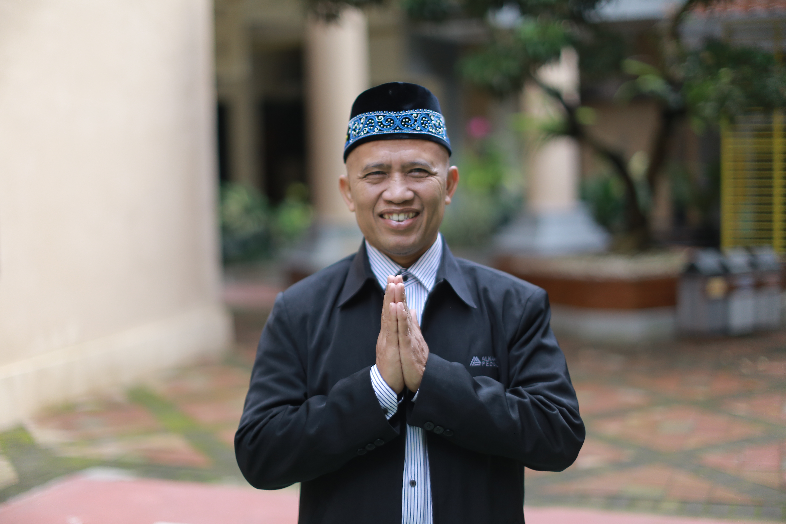

20+ tahun membangun dan memimpin sekolah — sekarang membantu sekolah dan yayasan lain berbenah, dari kepemimpinan sampai mutu pembelajaran.
“Terus belajar, terus berkontribusi, terus bermanfaat.”
— Coach Sugeng Susianto, M.pd
“Sebaik-baik manusia adalah yang paling bermanfaat bagi manusia lainnya.”HR. Ahmad
Memahami kondisi sekolah
Menyusun langkah yang pas
Pendampingan implementasi
Monitoring hasil & mutu
Sistem berjalan mandiri
Dari HRD perusahaan multinasional sampai kepala bidang di yayasan dengan 5 unit sekolah — Pak Sugeng sudah tiga kali membangun sekolah dari nol, dan sekarang membagikan pengalaman itu lewat pendampingan.
Bisa diambil satu per satu, atau digabung jadi program menyeluruh.
[Isi testimoni — ganti dengan cerita asli dari sekolah/yayasan]
[Isi testimoni — ganti dengan cerita asli dari sekolah/yayasan]
[Isi testimoni — ganti dengan cerita asli dari sekolah/yayasan]